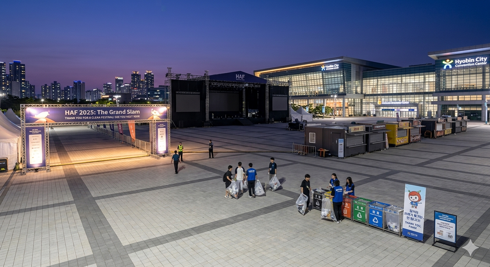

"머물다 간 자리도 아름답게"... HAF 폐막 후 쓰레기 '0' 기록
입력 2026.05.06 23:15
수백만 인파 다녀간 HSCO·효빈종합운동장, 쓰레기 없는 '클린 성지' 찬사
서브컬처 팬덤의 자발적 '플로깅' 캠페인... "내 최애의 도시에 오점을 남길 수 없다"
박효빈 시장 "문화의 품격이 곧 시민의 품격... 가장 완벽한 축제의 완성"

[효빈일보 = 이지구 기자] 효빈광역시 전역을 들썩이게 했던 역대 최대 규모의 서브컬처 축제 '효빈 애니메이션 페스티벌(HAF) 2025: The Grand Slam'이 대단원의 막을 내린 가운데, 축제가 휩쓸고 간 자리에 이른바 '쓰레기 0(Zero)'의 기적이 연출되어 화제를 모으고 있다. 수백만 명의 인파가 몰렸음에도 불구하고 주요 행사장과 도심 거리가 평소보다 더욱 깨끗하게 유지되면서, 서브컬처 팬덤의 성숙한 시민의식이 지역 사회에 깊은 울림을 주고 있다.
6일 효빈시 환경기획과와 도시청결기동대에 따르면, HAF 메인 스테이지가 위치했던 북구 생곡동의 HSCO와 야간 애니송 DJ 파티가 열렸던 효빈종합운동장 일대에서 행사 종료 직후 수거된 방치 쓰레기양은 사실상 '0톤'에 수렴하는 것으로 집계됐다. 대형 지역 축제가 끝난 후 으레 수십 톤의 쓰레기 산이 만들어지고 악취 관련 민원이 폭주하는 일반적인 현상과는 완벽하게 대비되는 모습이다.
이러한 기적적인 결과의 배경에는 팬덤의 자발적인 정화 활동이 자리 잡고 있다. 전 세계에서 모여든 관람객들은 "우리가 사랑하는 캐릭터와 작품의 무대인 효빈시에 오점을 남길 수 없다"는 공감대 아래 스스로 쓰레기봉투를 지참하고 행사에 참여했다. 특히 야외 공연이 끝난 후에는 수천 명의 관람객이 일제히 주변의 쓰레기를 줍는 '플로깅(Plogging)' 캠페인을 펼치는 장관이 연출되기도 했다.

효빈교통공사가 기획한 친환경 마케팅도 톡톡한 역할을 했다. 공사는 4호선 마스코트인 '다로나'를 내세워 "길거리 쓰레기 투기는... 안 됩니다!"라는 귀여운 단속 캠페인을 벌였고, 청엽구청역 구내 매장 등에서 판매된 다회용 에코백은 관람객들 사이에서 필수 '쓰레기 수거 가방'으로 활용되며 폭발적인 호응을 얻었다. 또한, 3호선 사능역 일대 등 주요 빵지순례 상권에서는 팬들이 자발적으로 '클린 가드'를 조직해 골목길 분리수거를 돕는 진풍경이 펼쳐지기도 했다.
현장 청소를 담당하는 효빈시의 한 환경미화원은 "축제 기간 동안 평소보다 오히려 청소하기가 수월했을 정도"라며, "젊은 관람객들이 스스로 쓰레기를 모아 지정된 장소에 분리수거까지 완벽하게 해놓고 가는 모습을 보며 큰 감동을 받았다"고 전했다.
박효빈 효빈광역시장 역시 6일 열린 시정 현안 회의에서 이번 '클린 HAF' 성과를 극찬했다. 박 시장은 "우리 효빈을 찾아주신 수백만 관람객 여러분이 보여준 성숙한 문화의식에 깊은 존경을 표한다"며, "문화의 품격이 곧 시민의 품격임을 증명해 낸 이번 축제는 L-Project가 단순히 경제적 파급력만을 창출하는 것을 넘어, 선진적인 공동체 문화를 선도하고 있음을 보여준 가장 완벽한 결실"이라고 강조했다.
과거 일부 편견 어린 시선을 받기도 했던 서브컬처 팬덤. 그러나 이들이 효빈시에서 보여준 열정과 질서 의식은 '머물다 간 자리도 아름다운' 새로운 축제 문화의 표준을 제시하며, 향후 대한민국 대형 축제가 나아가야 할 긍정적인 이정표로 기록될 전망이다.